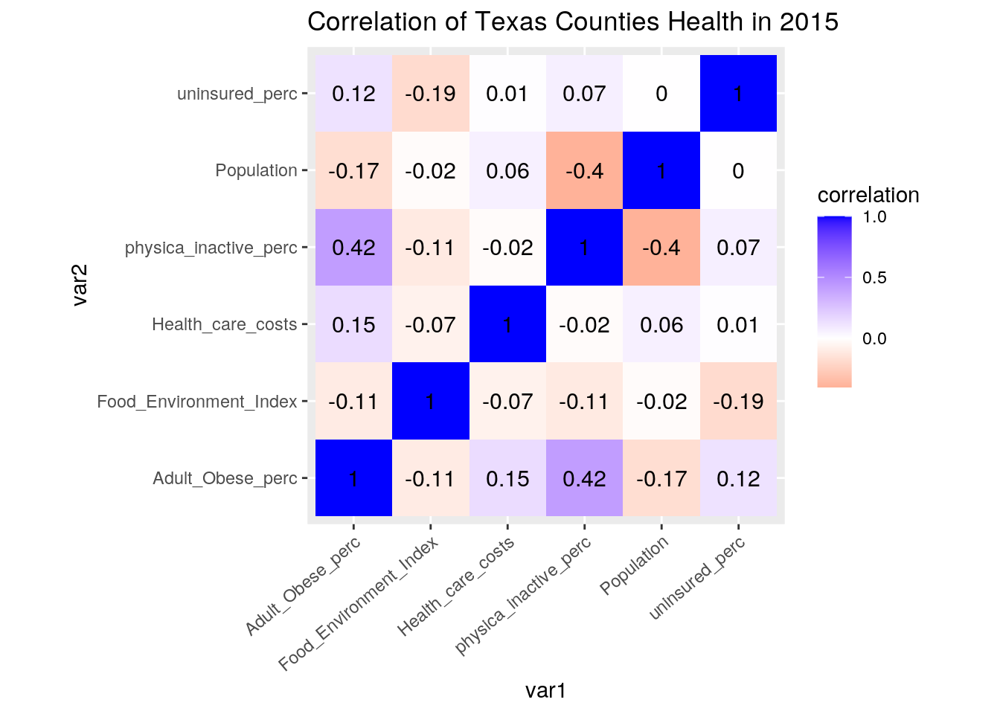
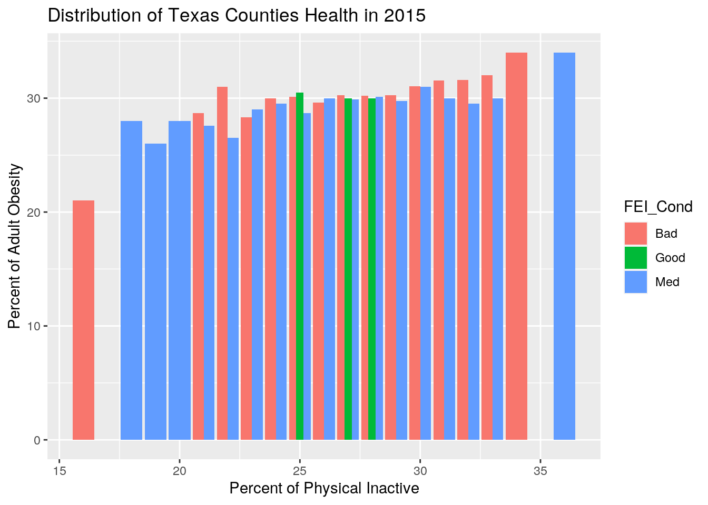
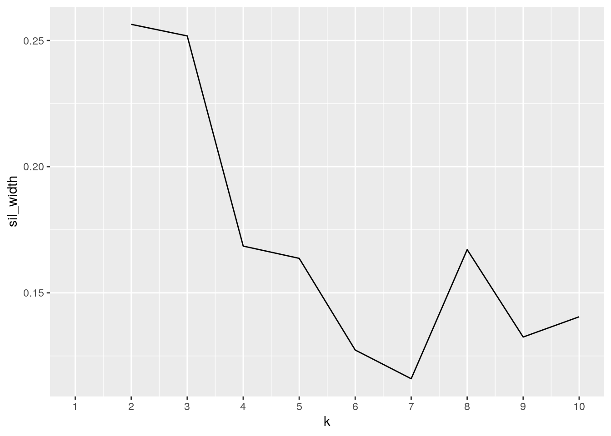
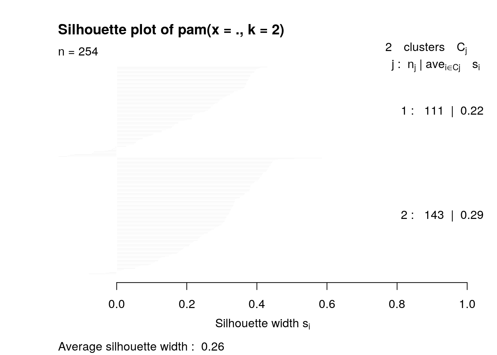
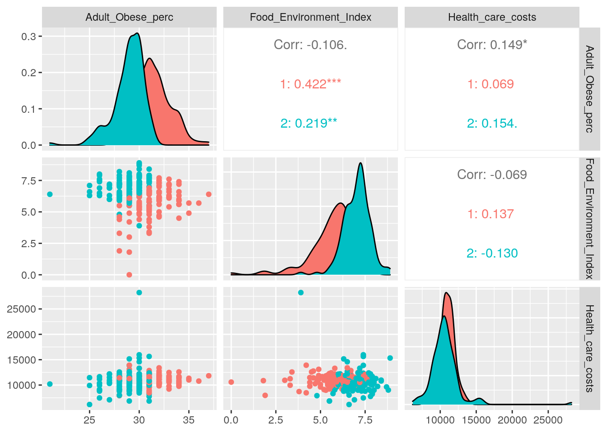

January 1, 0001
Introduction
The two data the I use for the project came from the County Healthy Ranking in 2015. The first “record” data consist of collected insurance information of all the counties in Texas. The data included: the counties’ population, percent of uninsured and the average heath care cost in 2015. The other data name “bg” is consist of resources availablity and health measurement. The data included: percent of adult obesity, food environment index and percent poor health from every county in Texas in 2015. I found these data to be interesting because I want if there are any associations between people’s resource ability in which include, insurance and access to healthy food, and their health level. The data set can be acquire by downloading the 2015 County Healthy Ranking of Texas State Report from the website https://www.countyhealthrankings.org/.
Making the data tidy
library(tidyverse)
bg <- read_csv("2015 County Health Ranking .csv")
bg <- rename(bg,c("County"= "X1", "Adult_Obese_perc"= "X2", "Food_Environment_Index"="X3" , "poor_health_perc"="X4", "physica_inactive_perc"="X5"))
bg<- bg[-c(1, 2), ]
bg <- bg %>% mutate_at(c("Adult_Obese_perc","Food_Environment_Index", "poor_health_perc", "physica_inactive_perc"), function(x) as.numeric(as.character(x)))
head(bg)## # A tibble: 6 x 5
## County Adult_Obese_perc Food_Environment_… poor_health_perc physica_inactive…
## <chr> <dbl> <dbl> <dbl> <dbl>
## 1 Anders… 36 5.7 21 29
## 2 Andrews 30 7.2 28 27
## 3 Angeli… 30 5.6 26 29
## 4 Aransas 28 5.9 NA 28
## 5 Archer 30 7.4 NA 27
## 6 Armstr… 28 4.8 NA 27record<- read_csv("(2)2015 additional info.csv")
record <- rename(record,c("County"= "X1", "Population"= "X2", "uninsured_perc"="X3" , "Health_care_costs"="X4"))
record<- record[-c(1, 2), ]
record <- record %>% mutate_at(c("Population","uninsured_perc", "Health_care_costs"), function(x) as.numeric(as.character(x)))
head(record)## # A tibble: 6 x 4
## County Population uninsured_perc Health_care_costs
## <chr> <dbl> <dbl> <dbl>
## 1 Anderson 57938 30 10784
## 2 Andrews 16799 29 9262
## 3 Angelina 87441 30 11561
## 4 Aransas 24356 30 10358
## 5 Archer 8681 27 10881
## 6 Armstrong 1949 24 7906These data sets are mostly already tidy but to make them in the right format, I first have to renamed in column since the excel file did not convert correctly thus they did not have the correct column names. After that I deleted the first 2 rows of the data since the first rows contained the column names and the second rows contain Texas data as a whole in which I don’t think I would need while comparing the counties. Since all of the categories were being imported as characters instead of numericals, I changed all columns into numeric except for the County column in which contained the counties names.
Join data
bigdat <-record %>% left_join(bg)I used left join to joined my data together using the variable they have in common which is county. I did not want to use inner join since they don’t have any common variables other than the county and I want to keep all of the varibles from both data sets. There no lost data when joining the two data sets.
Wrangling
#https://www.countyhealthrankings.org/explore-health-rankings/measures-data-sources/county-health-rankings-model/health-factors/health-behaviors/diet-exercise/food-environment-index
bigdat1 <-bigdat%>%
mutate(FEI_Cond = ifelse(Food_Environment_Index>8.2, "Good",
ifelse(Food_Environment_Index<=8.2 & 6.9<=Food_Environment_Index, "Med", "Bad")))
bigdat1 %>% summarise(n_distinct(County))## # A tibble: 1 x 1
## `n_distinct(County)`
## <int>
## 1 254bigdat1 %>% summarise(min(Population), max(Population)) ## # A tibble: 1 x 2
## `min(Population)` `max(Population)`
## <dbl> <dbl>
## 1 95 4336853bigdat1 %>% slice_max(Population)## # A tibble: 1 x 9
## County Population uninsured_perc Health_care_cos… Adult_Obese_perc
## <chr> <dbl> <dbl> <dbl> <dbl>
## 1 Harris 4336853 34 11724 28
## # … with 4 more variables: Food_Environment_Index <dbl>,
## # poor_health_perc <dbl>, physica_inactive_perc <dbl>, FEI_Cond <chr>bigdat1 %>% slice_min(Population)## # A tibble: 1 x 9
## County Population uninsured_perc Health_care_cos… Adult_Obese_perc
## <chr> <dbl> <dbl> <dbl> <dbl>
## 1 Loving 95 22 NA 30
## # … with 4 more variables: Food_Environment_Index <dbl>,
## # poor_health_perc <dbl>, physica_inactive_perc <dbl>, FEI_Cond <chr>bigdat1 %>% filter(FEI_Cond=="Bad") %>% summarise(mean(Adult_Obese_perc , na.rm=T),sd=sd(Adult_Obese_perc, na.rm=T))## # A tibble: 1 x 2
## `mean(Adult_Obese_perc, na.rm = T)` sd
## <dbl> <dbl>
## 1 30.3 2.18bigdat1 %>% filter(FEI_Cond=="Good") %>% summarise(mean(Adult_Obese_perc , na.rm=T), sd=sd(Adult_Obese_perc, na.rm=T))## # A tibble: 1 x 2
## `mean(Adult_Obese_perc, na.rm = T)` sd
## <dbl> <dbl>
## 1 30.2 0.447bigdat1 %>% group_by(FEI_Cond) %>% summarise( mean_Cost=mean(Health_care_costs, na.rm = T), sd= sd(Health_care_costs, na.rm=T)) %>% arrange(desc(mean_Cost))## # A tibble: 3 x 3
## FEI_Cond mean_Cost sd
## <chr> <dbl> <dbl>
## 1 Good 11150. 2473.
## 2 Bad 10863. 1973.
## 3 Med 10684. 1417.datcor <-bigdat1 %>% select_if((is.numeric)) %>% select(-poor_health_perc) %>% na.omit %>%cor()
datcor## Population uninsured_perc Health_care_costs
## Population 1.000000000 0.003015568 0.062526087
## uninsured_perc 0.003015568 1.000000000 0.007110107
## Health_care_costs 0.062526087 0.007110107 1.000000000
## Adult_Obese_perc -0.173141391 0.122364457 0.149229121
## Food_Environment_Index -0.018944180 -0.187476516 -0.069288840
## physica_inactive_perc -0.401332520 0.068339968 -0.020047386
## Adult_Obese_perc Food_Environment_Index
## Population -0.1731414 -0.01894418
## uninsured_perc 0.1223645 -0.18747652
## Health_care_costs 0.1492291 -0.06928884
## Adult_Obese_perc 1.0000000 -0.10500464
## Food_Environment_Index -0.1050046 1.00000000
## physica_inactive_perc 0.4202643 -0.11222673
## physica_inactive_perc
## Population -0.40133252
## uninsured_perc 0.06833997
## Health_care_costs -0.02004739
## Adult_Obese_perc 0.42026428
## Food_Environment_Index -0.11222673
## physica_inactive_perc 1.00000000bigdat1 %>% na.omit %>% summarise_all(list(mean=mean, sd =sd))## # A tibble: 1 x 18
## County_mean Population_mean uninsured_perc_… Health_care_cos… Adult_Obese_per…
## <dbl> <dbl> <dbl> <dbl> <dbl>
## 1 NA 211456. 30.6 10890. 30.1
## # … with 13 more variables: Food_Environment_Index_mean <dbl>,
## # poor_health_perc_mean <dbl>, physica_inactive_perc_mean <dbl>,
## # FEI_Cond_mean <dbl>, County_sd <dbl>, Population_sd <dbl>,
## # uninsured_perc_sd <dbl>, Health_care_costs_sd <dbl>,
## # Adult_Obese_perc_sd <dbl>, Food_Environment_Index_sd <dbl>,
## # poor_health_perc_sd <dbl>, physica_inactive_perc_sd <dbl>,
## # FEI_Cond_sd <dbl>bigdat1 %>% group_by(FEI_Cond) %>% select_if((is.numeric)) %>% select((-poor_health_perc)) %>%na.omit %>% summarise_all(list(mean=mean, sd=sd)) %>% pivot_longer(-1) %>% pivot_wider(names_from = name, values_from= value)## # A tibble: 3 x 13
## FEI_Cond Population_mean uninsured_perc_… Health_care_cos… Adult_Obese_per…
## <chr> <dbl> <dbl> <dbl> <dbl>
## 1 Bad 133386. 31.4 10863. 30.3
## 2 Good 5728. 32.6 11150. 30.2
## 3 Med 66782. 30.1 10684. 29.6
## # … with 8 more variables: Food_Environment_Index_mean <dbl>,
## # physica_inactive_perc_mean <dbl>, Population_sd <dbl>,
## # uninsured_perc_sd <dbl>, Health_care_costs_sd <dbl>,
## # Adult_Obese_perc_sd <dbl>, Food_Environment_Index_sd <dbl>,
## # physica_inactive_perc_sd <dbl>First, I used mutate and ifelse to create a new categorical data out of the numeric column “Food Environment Index”. Based on the information from the www.countyhealthranking.org the average value of Food Environemnt Index from countries was 7.9 and most countries fell between 6.9 to 8.2. Therefore, I want to label the counties that have Food Environment Index in the range of 6.9 to 8.2 to be consider medium. Anything more than the range will be consider good and under the range are consider bad. Food Environment Index is a marker use to measure both the proximity to health food and household income. FEI measures the distance to access healthy food like grocery store and the inability to access healthy based on cost barriers.
Secondly, I explored the data and found out that the record contain data from 254 counties in Texas with the smallest county (Loving) which has a population of 95 and the largest county (Harris) which has around 4,336,853 people in 2015. Based on the information from the website, there are strong evidence that bad Food Environment Index is correlate to obesity, bad health outcomes and increase health care cost. Therefore, in order to test this statement, grouped the counties with bad FEI, calculate the mean of percent obesity and standard deviation, and compared those values to the counties with good FEI. Doing so, the result showed that the mean of both good and bad FEI counties are about to be the same but bad FEI counties had a higher standard deviation thereofere there are more variations around the mean percent of obesity. Furthermore, contradict to the report statement, counties with good FEI in 2015 have the highest mean of Health Care Cost and bad FEI took the second place. Though we still need to take into consideration that the standard deviation of good FEi is greater than counties that had bad FEI. After conducting correlations between the variables, the correlation between Obesity and healthy care cost was 0.15. The correlation between FEI and obesity percentage is -0.105 which means there was a weak negative correlation to indicate that as the FEI go higher (good) the percentage of obesity is lower. The strongest correlation is between the perccent of inactive and percent of obesity. Notice I chose to omit poor health percentage when calculating statistic because this data has a lot of NAs (more than half of the data is missing) and I don’t want to create any bias or omit other data because of the NAs.
Visualization
tidycor <- datcor %>% as.data.frame %>% rownames_to_column("var1") %>%
pivot_longer(-1,names_to="var2",values_to="correlation")
tidycor%>% ggplot(aes(var1,var2,fill=correlation))+
geom_tile()+
scale_fill_gradient2(low="red",mid="white",high="blue")+
geom_text(aes(label=round(correlation,2)),color = "black", size = 4)+
theme(axis.text.x = element_text(angle = 40, hjust=1))+
coord_fixed()+ ggtitle("Correlation of Texas Counties Health in 2015")
ggplot(data = bigdat1, aes(x = Adult_Obese_perc, y = Health_care_costs)) +
geom_point(color = "gray") + scale_x_log10() + scale_y_log10()+geom_line(aes(color = FEI_Cond)) +
ggtitle("Distribution of Texas Counties Health in 2015") +
ylab("Average Health Care Cost") + xlab("Percent of Adult Obesity")+
facet_wrap(~FEI_Cond)+scale_x_continuous(breaks = seq(20,40,5))
ggplot(bigdat1, aes(x = physica_inactive_perc, y = Adult_Obese_perc, fill=FEI_Cond))+
geom_bar(stat="summary",fun=mean, position = "dodge")+ ggtitle("Distribution of Texas Counties Health in 2015")+ ylab("Percent of Adult Obesity") + xlab("Percent of Physical Inactive")+scale_x_continuous(breaks = seq(15,35,5))
The first graph is a heat map graph that show correlations between variables of the Texas County Health data. As seen before, the highest correlation is present between percent of Adult Obesity and percent of physical inactive. The lowest correlation which is 0 presented between population and percent of uninsured in each county. Overall, there are there are no presence of really strong correlations between these variables present in these datasets. Though based on the website, I should see a strong evidence that indicate a negative correlation between FEI and obesity. Since food dessert usually would result in higher percentage of obesity. In the graph we do see a very slight negative correlation between FEI and adult obesity. In order to see this pattern more clearly, more data across multiple years would be better in examine the correlation between these variables.
The second graph shows variations of adult obesity and health care cost grouping by the Food Environment Index(FEI). Based on the graph, we can see the most variations in the bad FEI group comparing to others FEI groups. We might want to take into consideration the sample size of each FEI categories, the large variation might accountable for a larger sample. Since there are way more counties that have bad FEI than good FEI, in some sense we might expect higher variation in bad FEI than good FEI. Nevertheless, based on the information presented in this graph we can see that most counties indepedndent of FEI conditions, averages around 30% in adult obesity. Most of the counties that have good FEI condition have a population of 30% in adult obesity. Contradicting to the overall statistics across multipe years, in 2015 the counties that has highest and the lowest average health care cost have bad FEI condition.
The third and fourth graph show the trend of physical inactive and obesity percentages. There’s a slight positive correlation between these two variables. As the percent of physical inactive increases the perent of obesity increases. We can see this trend more clearly in the counties that labeled red which is the bad FEI counties. The medium FEI counties seem to have a uniform distribution with about 30% of adult obsity across all physical inactive percentage. The good FEI counties were situated around the 25-30% physical inactive and 30% of adult obesity.
Dimensionality Reduction
library(cluster)
library(GGally)
pamdat<-bigdat1%>%select(Adult_Obese_perc, Food_Environment_Index, Health_care_costs) %>% scale()
sil_width<-vector()
for(i in 2:10){
pam_fit <- pam(pamdat, k = i)
sil_width[i] <- pam_fit$silinfo$avg.width
}
ggplot()+geom_line(aes(x=1:10,y=sil_width))+scale_x_continuous(name="k",breaks=1:10)
pam1 <- pamdat %>%scale() %>% pam(k=2)
plot(pam1,which=2)
bigdat1 %>% mutate(cluster=as.factor(pam1$clustering)) %>%
ggpairs(columns = c("Adult_Obese_perc", "Food_Environment_Index", "Health_care_costs"), aes(color=cluster))
pamclust <- bigdat1 %>% mutate(cluster=pam1$clustering)
library(plotly)
pamclust%>%plot_ly(x= ~Adult_Obese_perc, y = ~Food_Environment_Index, z = ~Health_care_costs, color= ~cluster,
type = "scatter3d", mode = "markers") %>%
layout(autosize = F, width = 900, height = 400)pamclust %>% select(c(1,2,10))## # A tibble: 254 x 3
## County Population cluster
## <chr> <dbl> <int>
## 1 Anderson 57938 1
## 2 Andrews 16799 2
## 3 Angelina 87441 1
## 4 Aransas 24356 2
## 5 Archer 8681 2
## 6 Armstrong 1949 2
## 7 Atascosa 47093 2
## 8 Austin 28847 2
## 9 Bailey 7114 2
## 10 Bandera 20601 2
## # … with 244 more rowsI selected 3 variables in which includes health care cost, food environment index and percent of adult obesity in this 2015 Texas counties data to analyze for dimensionality reduction. First,I calculated the silhouette width in order to determine the best number of cluster. As shown in the first grapgh, the highest average silhouette occur at k=2 therefore 2 clusters would be the best to represent this data. I calculated the silhoutte plot using PAM to find the average silhouette width to be 0.26 which is very low. This number indicate that there are very weak structure in this data and the structure could be artificial. There are 111 counties that presented in cluster one and 143 counties in cluster 2. As seen in the last graph, there are not much distance between these two clusters and the individual data points are not very close to the average of each cluster hence the weak structure in this dataset. The third grapgh demonstrated that the first cluster is associated with high adult obsesity percentage and low FEI which means these counties don’t have easy access to health food. In contrast, the cluster 2 is associated with low adult obesity percentage and good food environment index. Looking at the pamclust dataset, usually bigger counties like Bexar, Hunt and Johnson is in cluster 1. The association is quite weak therfore more data is needed to assess this associations.